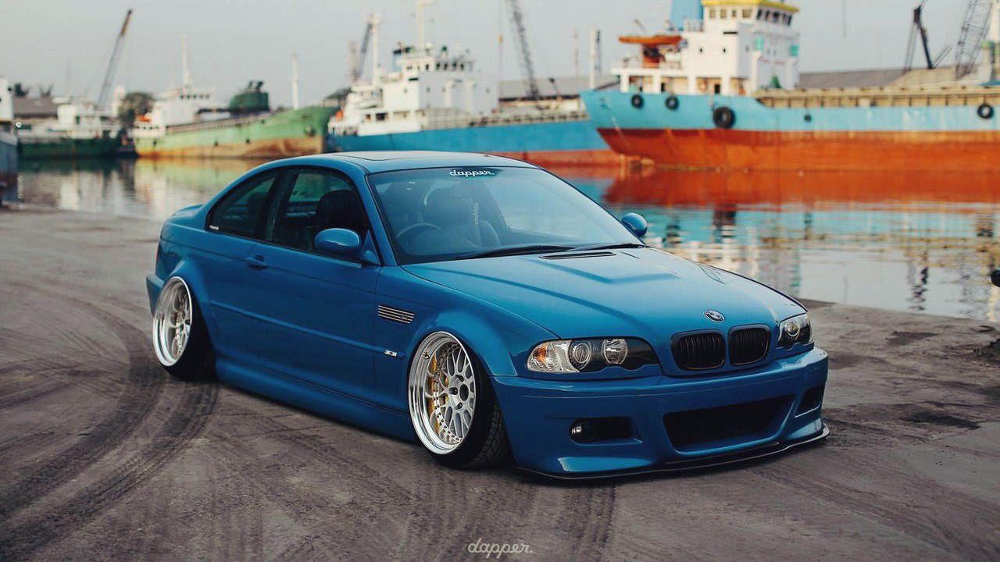

Что такое STANCE и с чем его едят?
Stance (в переводе с англ. "посадка") — все чаще применяется к автомобилям относительно клиренса (дорожного просвета) и заменяет слово Drop (в переводе с англ. "падение"), которым обозначается заниженный и уроненный на самое брюхо автомобиль (дропнутый).
"Stance"- это вся культура низких машин. Она так и называется- "stance-культура". К ней относятся VW, ВАЗ, Opel, BMW и все остальные марки и модели автомобилей, выдержанные в общих традициях- правильные диски и посадка, а также наличие изюминки, позволяющей автомобилю отличаться от себе подобных (например, редкие OEM-фары от Golf MK2 Rallye на Jetta MK2 и т.д.). Так что неважно, Daewoo Lanos это или же Audi A6. Главное то, чтобы машины были стильными!
В блоге bodybeat.ru Олег Мильченко выделил 2 вида "посадки" автомобиля:
— Low stance — когда машина буквально лежит на днище, не редко можно увидеть на автомобилях, исполненных в JDM Style;
— Gay stance — дополнительное увеличение дорожного просвета, делая из машины "джип".

Основными элементами Stance культуры являются посадка (клиренс) автомобиля и расположение колеса в арках.
Поклонники Stance культуры на своих Stance car'ах осознанно жертвуют быстрым и комфортным передвижением по дорогам, медленно переползая через лежачие полицейские, сталкиваются с проблемами в виде плохих дорог и прочих колдобин, отдавая дань стилю и культуре в целом.
Все это позволяет выделить автомобиль на дороге из серой массы и сделать его более привлекательным.
Ваши мысли?
«Вау, круто!»
«Диски зачет!»
«Фигассе он арки себе раскатал»
«Он дисков шире не нашел чтоль?!»
«Нифигассе развал!»
«Как он сюда заехал ваще с таким дропом?»
Знакомо? Мне — да. А как вы думаете, что скажет среднестатестический американский поц, неравнодушный к тюнингу?
“Nice stance!” — и будет на 100% прав.
Все эти определения, что я обозначил выше (включая недоумение о том, как он проехал на парковку через лежачего полицейского) — все это является переводом слова stance на отечественный тюнерский язык. А если проще – «Не для наших дорог».